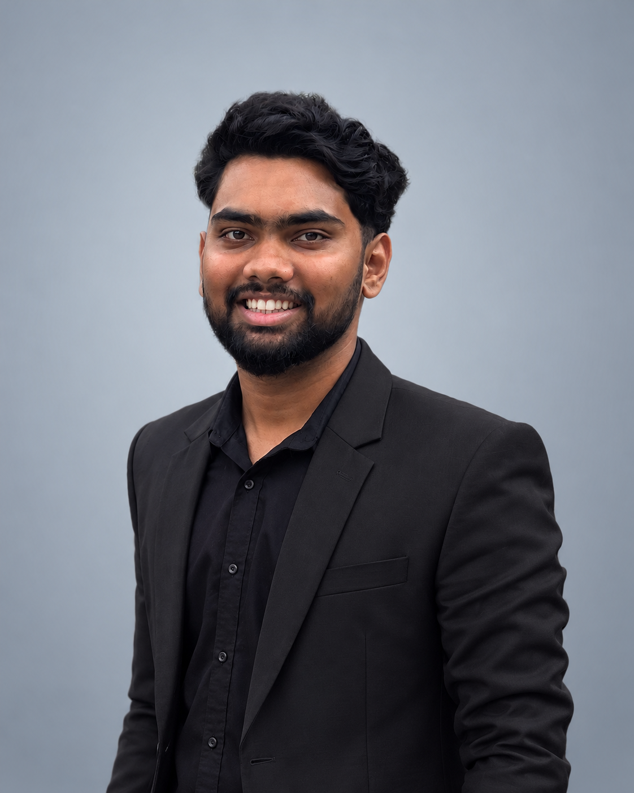

ShadowFix AI
2026Removes shadows from photos with a 7.76M-parameter U-Net. I compared RGB, residual and mask-guided variants on ISTD and shipped the best one in a Gradio app with adjustable strength.
- 30.19 dB PSNR
- 0.951 SSIM
- +9.63 dB vs input
I'm Pranay, a software and machine learning engineer focused on AI and computer vision. I'm doing my MS in Computer Science (AI/ML) at the University at Buffalo, where I work on multi-sensor optical and infrared sensing for autonomous plastic sorting.

AI and computer vision, from training to a working demo.
Removes shadows from photos with a 7.76M-parameter U-Net. I compared RGB, residual and mask-guided variants on ISTD and shipped the best one in a Gradio app with adjustable strength.
Fine-tuned YOLOv8m on a 59-class TACO-derived dataset of cluttered waste scenes, then added heatmaps, a cleanliness score and an interactive Gradio assistant.
Recognises hand gestures live from a webcam. MediaPipe extracts hand landmarks, a custom Keras network classifies them, and OpenCV shows the prediction on the video feed.
Estimates used-car resale prices from make, model, year, fuel type and mileage. A scikit-learn pipeline is served from Flask with a browser form for live predictions.
A personal voice assistant inspired by Iron Man. It listens for spoken commands, answers questions from Wikipedia, runs browser tasks and plays music, replying with text-to-speech.
An Android app that scans a student ID card, reads it with OCR and tells you whether the ID is valid. Signed release APKs are included in the repo.
Browse planets from the Star Wars API, with a details view for each one.
Responsive animated product page with a purchase flow.
Browser card game: draw until you hit 21 without going over.
Fraud, taxi fare, vaccination and music taste models from my data science internship.
Android app that tells you your age in minutes from a picked birthday.
A YouTube home page clone built with plain HTML and CSS.
ASAP is building a low-cost sensing system that identifies plastic types from how they interact with light, so they can be sorted automatically. I'm working in the data-collection phase.
Data validation and quality-focused operations for a Google/YouTube client, with training in generative AI, agentic AI and AI-assisted workflows.
Built fraud, taxi fare and vaccination prediction models with 99%, 97% and 85% accuracy, comparing tree ensembles, SVMs and regression.
Deep Learning, Computer Vision & Image Processing, Statistical Data Mining, Data-Intensive Computing, Computer Security.